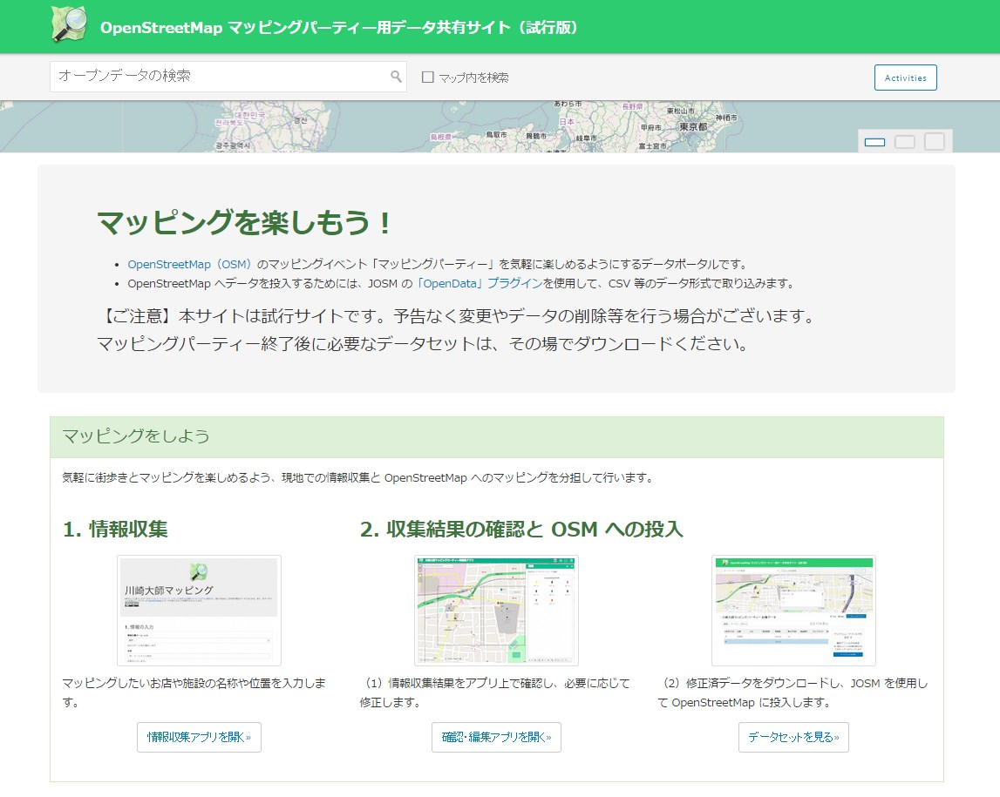
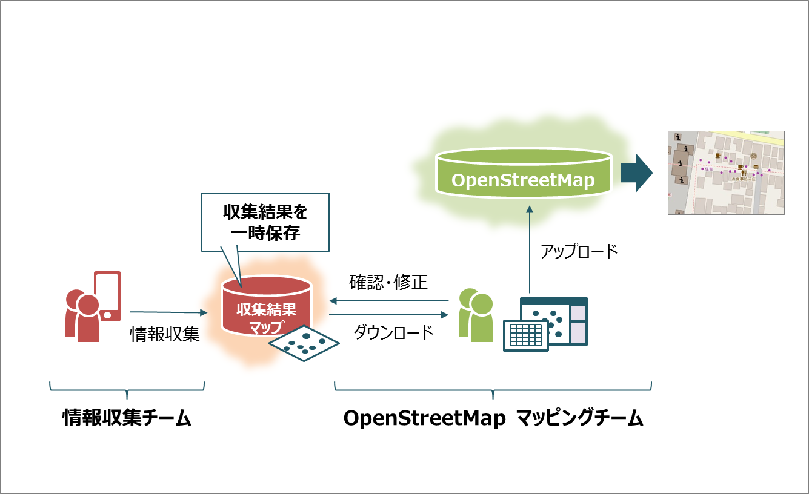
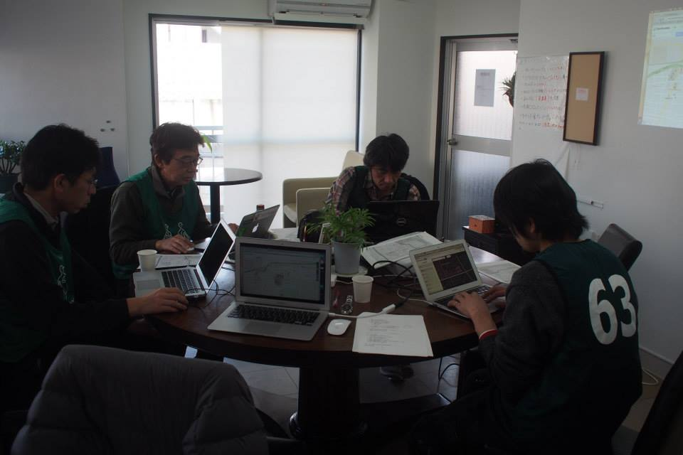
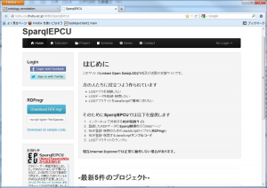
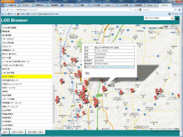

カテゴリー： ‘技術コラム’
技術コラム第22回：地域主体でのマッピングを支える仕組みづくり
LODチャレンジ2014 データ提供パートナー 「オープンストリートマップ・ファウンデーション・ジャパン」木田様から「マッピングパーティ用サイト」についてご紹介頂きました。地域の方、誰もがフィールドワークとして楽しく「マッピングパーティ」に参加できるツールです。
一般社団法人オープンストリートマップ・ファウンデーション・ジャパン / ESRIジャパン株式会社 木田和海
OpenStreetMap（http://www.openstreetmap.org）は、誰でも自由に地図データを作成・利用することができるプロジェクトです。2004年にイギリスからプロジェクトが始まり、今では世界中にそのムーブメントが広がっています。特に、OpenStreetMap の地図作成を行うイベントは「マッピングパーティー」と呼ばれており、全国各地で行われるようになっています。
このマッピングパーティーに参加したり、運営のお手伝いをしたりする中で、OpenStreetMap のマッピングを本格的に行いたい方はもちろん、街歩きのついでに楽しくマッピングしたいという方も多く見かけるようになり、参加者層の広がりを感じるようになりました。もっと手軽に街歩きとマッピングを楽しむためには何が必要か、そう考えた際、以下のような問題点も感じるようになりました。
- ・マッピングを手軽に楽しみたい方は、OpenStreetMapアカウントを作成する等の事前作業が煩雑に感じる。
- ・OpenStreetMap マッピングに用いるツールは地図ツール特有の操作を含むため、初めての方にとって取っ付きにくい。
- ・通常マッピングに用いるツールでは OpenStreetMap の本データにアクセスすることになるため、初めての方にとってデータを壊してしまわないか不安感が高い。
そこで、より手軽に街歩きとマッピングを楽しめるようにするために、役割分担を容易にする仕組みが必要ではないかと考え、情報収集と OpenStreetMap マッピングを分担するツールをプロトタイプとして作成しました。

OpenStreetMap マッピングパーティー用データ共有サイト（試行版）
<http://happymapping.ejopendataportal.opendata.arcgis.com/>
このツールでは、マッピングパーティーを気軽に楽しみたい方は情報収集を中心に行い、OpenStreetMap の編集作業自体は習熟者に任せる仕組みを想定しています。
まず、マッピング参加者は情報収集ツールを使用して、マッピング対象地域を歩きながらマッピングに必要な情報を収集します。ここで作られたデータは OpenStreetMap の本データベースに蓄積されるのではなく、別のクラウド上に一時保存されています。次に、現地調査の後、データに重複がないか、入力ミスがないかを確認・編集ツール上で確認し、必要に応じて修正作業を加えます。最後に、修正を済ませたデータを OpenStreetMap の習熟者がまとめて OpenStreetMap の本データ上にアップロードし、一連の作業は完了です。
この仕組みを用いることで、以下の効果が見込めるではないかと考えています。
- ・OpenStreetMap 特有の「タグ」を覚えたり都度探したりすることなく、手軽に現地での街歩きとマッピングを楽しめる（情報収集ツールではタグを主だったものに絞り込んでいます）。
- ・情報収集を行うと、OpenStreetMap のタグ名に準拠したデータが蓄積されるため、習熟者がまとめてOpenStreetMap 上にアップロードする際の負荷が軽減される。
- ・現地調査と OpenStreetMap マッピングの役割分担が可能となり、マッピングパーティー自体の運営が円滑になる。

仕組みのイメージ
この仕組みを2014年12月に開催された OpenStreetMap 日本コミュニティの年次イベント「State of the Map Japan 2014」で発表し、後日行われた世田谷代田のマッピングパーティーで試行したところ、短時間で多くの情報を集めることができました。そこで、より本格的な実践活動として、2015年2月21日のインターナショナル・オープンデータ・デイの川崎会場のイベントで、川崎市にある名刹「川崎大師」を対象としたマッピングパーティーを開催した際に、このツールを使用してみました。
当日の役割分担は、川崎大師に赴く「現地調査チーム」と、別会場である川崎市の新丸子地区で OpenStreetMap の建物トレースと現地調査チームの収集結果をマッピングする「OpenStreetMap マッピングチーム」の2チーム体制としました。その結果、現地調査チームは1時間半程度の街歩きの間に、川崎大師の参道沿いのお店を中心に合計約100件の情報を集めることができました。OpenStreetMap マッピングチームは、現地調査チームが順調に情報収集を行い件数が増えていく様子を眺めつつ、データの修正と OpenStreetMap への投入を行いました。

OpenStreetMap マッピングチームの作業風景
今回作成したツールは、地域の方がマッピング活動にいっそう参画しやすくするためのプロトタイプの仕組みとして位置づけています。ツールの本格展開は現在検討中ですが、現在サイト上に公開されているツールを用いてデータ投入、編集とダウンロードをお試しいただくことは可能です。今後ブラッシュアップを加え、マッピングパーティーに多様な方が参加し、いっそう楽しくなるような仕組みとして発展できるようになればと思っています。
技術コラム第21回：函館の歴史資料を用いた市民に新たな発見がある写真検索システム
「函館の歴史資料を用いた市民に新たな発見がある写真検索システム」でアイデア部門最優秀賞を受賞された高橋正輝さんから、メッセージをいただきました。
公立はこだて未来大学では、「函館市を中心とする函館圏地域の文化財をデジタル化して活用するための事業を、公立はこだて未来大学が担うことで、情報技術を活用した地域の文化発信の拠点をつくる」というねらいのもと、2010年度にデジタルアーカイブ研究センターを設置しました。また、同年度から、函館市の大量の歴史資料を所蔵する函館市中央図書館と連携し、デジタルアーカイブCMSの構築を進めてきました。現在、写真(絵葉書)や地図、ポスターなどの蓄積された画像データを目録(メタデータ)と併せて「函館市図書館所蔵デジタルアーカイブ デジタル資料館」で公開しています。この大量のデータを活用して、新たなコンテンツを作るための仕組みを構築するというテーマへの取り組みの中でLinked Open Dataに着目しました。
LODチャレンジ2012のアイデア部門において最優秀賞を頂いた「函館の歴史資料を用いた市民に新たな発見がある写真検索システム」は、函館のデジタルアーカイブにおける一万点以上の膨大な写真から、市民が懐かしさを感じることや、函館の歴史について意外な事実を知あることができる写真の検索の仕組みです。写真だけでなく、他の施設で所有する文献資料のような散在する歴史資料をLOD化することで、写真のメタデータや文献資料に記述された日付や人物名がリンクします。そのリンクを利用し、市民の属性情報や検索キーワードの入力をクエリにSPARQLで関連を辿り、関連付けられた写真を提示するシステムの構築を目指しています。
 システム概要
システム概要
このような賞をいただけたのも、研究資料を提供してくださっている函館市のみなさまのおかげです。また、LODチャレンジ2012に函館の観光情報LODのエントリーを目指し、一年間共にLODの知識ゼロの状態からLODの取り組みや技術について学んだ高度ICT演習観光系プロジェクトに感謝しています。昨年12月の「LODチャレンジデーinはこだて」では、ゲストのみなさまにLODを通した地域活性化をテーマにディスカッションしていただき、貴重な知見を得る事ができました。LODの活動から、様々な人々との関係を築くことができ、このような成果に結びつけることができたことをとても嬉しく思っています。今後も、このアイデアを実現することを目指すだけでなく、地域の人々に価値のあるデータの公開・活用に取り組んで行きたいです。
公立はこだて未来大学 高橋 正輝
技術コラム第20回：SparqlEPCU／WebDocManager／LOD Browser
「SparqlEPCU」，「WebDocManager」，「LOD Browser」でアプリケーション部門最優秀賞を受賞された年岡晃一さんから、メッセージをいただきました。
Linked Open Data チャレンジ Japan 2012にてアプリケーション部門最優秀賞を頂きましたSparqlEPCU及び関連作品についてご紹介致します。
作り始めたきっかけ
RDFのデータ形式を使うとWebに上がっている世界中の様々なデータを２次利用出来るという道が開けます。しかしいざそういうアプリケーションを作ろうとするとRDFの格納やらSPARQL検索エンジンの呼出しやらで、初心者やプログラマー以外の人には敷居が高く感じられたり、それなりの時間や労力が必要となったりします。これらの問題を軽減するシステムを考えたいというのがきっかけです。
図１．SparqlEPCUサイト・トップページ
SparqlEPCUとは
Google Mapsでは地図データをクラウドから持ってきますが、それと同じ様にRDFデータをクラウドからデータを持って来ることを可能にするフレームワークです。クラウドのRDFサーバーとそこにアクセスするためのJavaScriptライブラリ及びサービス提供サイトから成ります。ライブラリAPIを呼び出すLODのアプリケーションは、RDFstoreの実装の手間が省け、分野に特化した処理やGUI作成に専念することが出来ます。Googleの地図データとは違って、RDF格納の機能も必要となるので簡単なアクセス権の制御も出来るようにしています。
以下の順に、理解のレベルに応じてLODアプリケーションの構築が出来ます。
先ずはプログラミング無しでLODを体感
- CSVデータを作成
- SparqlEPCUサイトのGUI画面からCSVデータをRDF登録
- SparqlEPCUサイトのGUI画面からSPARQL検索で登録RDFの確認
- LOD Browserを使ってLODアプリを体感
JavaScriptプログラミングでアプリ構築
- API呼出しのサンプルコードHTMLファイルダウンロード
- サンプルHTMLをダブルクリックして動作確認
- SparqlEPCUサイトで自分のプロジェクトを作成
- サイトにあるAPIチュートリアルで機能の詳細を確認
- JavaScriptコードを使って他データとマッシュアップし、アプリ構築
WebDocManager、LOD Browser は、上のステップ9で開発したアプリケーションです。図2のLOD Browser では、RDFデータに緯度・経度情報が含まれている場合、Google Maps上にその位置を表示します。
 図２．LOD Browser
今後の展望
現在、RDFサーバーの実装部分はscale outにはなっていないので、PaaS (Platform as a Service) を使ってこれを解決して置きたいと考えています。またJavaScriptやマッシュアップは今後もICTやクラウドサービスの中核として使われていくと思われます。多くの方が、本フレームワークを使って様々なLODアプリケーションを作って頂けるよう工夫をして行きたいと思います。
来年度応募を考えている人へのメッセージ
LOD実現のために更なる様々な切り口のサービスや部品化のプラットフォーム作り、データのWeb作りなどが続々と作られ始めています。本システムがそういう中に参加していく足掛かりや参考になれば幸いです。
LODチャレンジへの期待
LODチャレンジは産官学から成るソフトウェア作りのコンソーシアムとして、ソフトウェア活動の新しいプラットフォームになるような気がします。ハッカソンやアイデアソンを通じて生まれる様々なビジネスモデルや新しい社会システムが日本の経済をきっと立て直して行くと信じます。
中部大学 年岡晃一